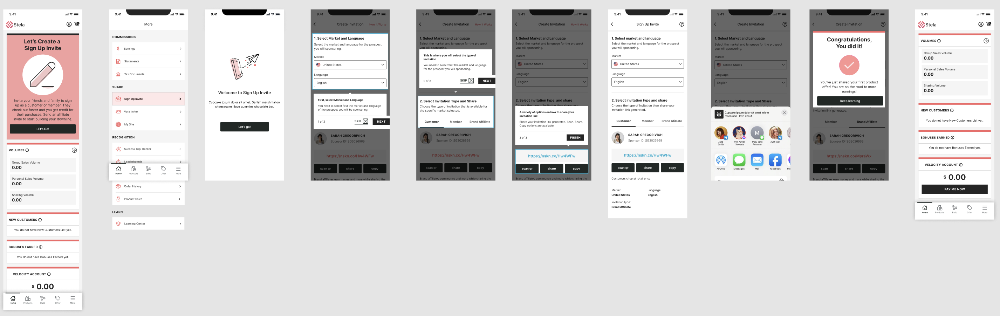
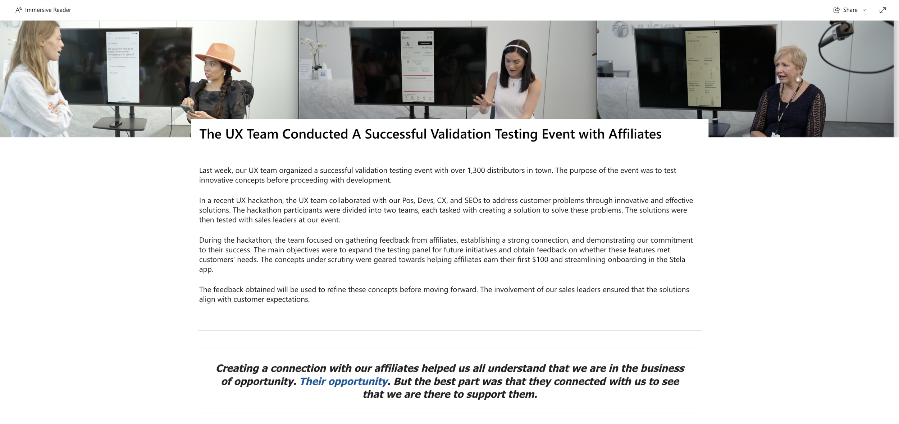

Stela Onboarding
Designed an onboarding experience within the Stela app to help new affiliates take their first steps toward earning income.

Overview
Nu Skin has traditionally relied on Brand Affiliates to onboard and train new members, leading to inconsistent guidance and lower early engagement.
During a company-wide UX Hackathon, I collaborated with Product, Customer Experience, and UX teams to design an onboarding experience within the Stela app that helps new affiliates take their first steps toward earning income.
By providing structured resources and actionable guidance, the feature supports users in reaching key early milestones and building long-term success.
My Contributions
UX Strategy
Collaborated with Product Owners, Customer Experience, and UX peers to define a clear onboarding concept that addressed early affiliate engagement and training consistency.
Prototype Design
Designed a high-fidelity onboarding flow in under a day, focusing on clarity, motivation, and actionable next steps for new affiliates.
User Validation
Led in-person guerrilla testing and remote moderated usability sessions to validate the experience and identify areas for clearer guidance and coaching.
Process
Research & Discovery
As part of a company-wide UX Hackathon, I collaborated with Product Owners, Customer Experience, and fellow designers to explore solutions for improving new affiliate onboarding. Through collaborative brainstorming and affinity mapping, we generated and prioritized ideas before selecting a concept to prototype and validate.

Design & Iteration
Working alongside another UX Designer, I translated our ideas into a high-fidelity prototype within a single day. Our goal was to create an onboarding experience that was simple, actionable, and motivating, while incorporating small moments of delight to keep new users engaged.

Guerrilla Testing
We tested the prototype in the Nu Skin headquarters lobby with Brand Affiliates attending a company event. Participants responded positively to the concept and immediately recognized the value of having guided onboarding within Stela.

Key Insights
- Users were excited to see a dedicated onboarding experience.
- Affiliates believed the feature would make training new recruits significantly easier.
- Many wanted the ability to revisit onboarding content after completing it.
Remote Usability Testing
To validate the experience with first-time users, we conducted a moderated usability study through UserZoom. Participants completed onboarding tasks while thinking aloud and shared feedback on clarity and navigation.
Additional Insights
Users found the onboarding flow intuitive and easy to navigate. Participants wanted additional context and coaching throughout the experience.
“A little more explanation on each page could be helpful. I was confused on the discount step, but a simple explanation would have made it make sense.” — New Brand Affiliate
Final Iteration
Outcome
Research showed that new affiliates needed ongoing guidance rather than a one-time onboarding flow. Based on our findings, we recommended a progressive onboarding experience that surfaces the next most valuable action at the right time: creating a product offer, inviting customers to Vera, and sharing a sign-up invite.
This approach reduces cognitive load, reinforces high-impact behaviors, and helps new affiliates build momentum toward their first earnings milestone.